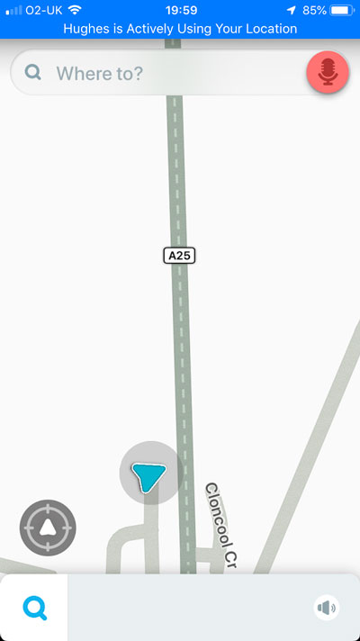
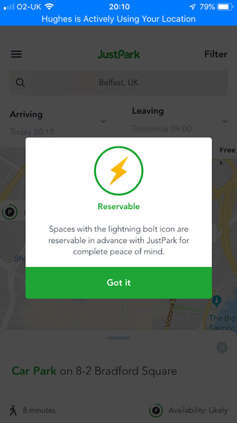
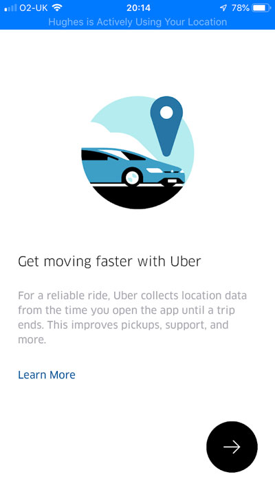
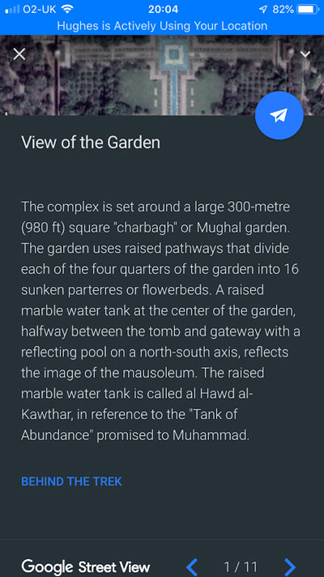

<!DOCTYPE html>
<html lang="en"></html>

<head>
        <meta charset="utf-8"/>
        <title>IXD104</title>
    
    <!-- linking css file to page
    <link href= '' type='text/css' rel='stylesheet' />
    -->
    <!----- link to google fonts ----->
        
</head>

<body>
    <article id="top">
    <header>
        <h1>IXD 104</h1>
        <h3>Work posted on my Tumblr page from IXD 104 and lecture notes</h3>
        
            <nav>
            <ul>
            <li><a href="#week01">Week 01</a></li>
            <li><a href="#week02">Week 02</a></li>
            <li><a href="#week03">Week 03</a></li>
            </ul>
        </nav>
        
<p>This repository is created for the purpose of organising my lecture notes and tumblr posts for IXD 104, so that it is easy to find sections in my work and the research I used to support my work.</p>
         </header>
        
        <h2 id="week01">Week 01- tutorial notes</h2> 
        <ul>
            <li>No lecture St Patricks day</li>
            <li>Visualising data</li>
            <li>A cornucopia of charts</li>
            <li>Desigining with Data</li>
            <li>Illustration 30%</li>
            <li>Diagram 30%</li>
            <li>Reserach 40%</li>
            <li>Disgrams</li>
            <li>John Wicks</li>
            <li>Best in show the ultimate data dog</li>
            <li>Rembrandt focused copy</li>
            <li>Tim’s micons </li>
            <li>Viva bells rockets </li>
            <li>1. an icon set trains planes and automobiles</li>
            <li>2. city illustration</li>
            <li>3. travel app</li>
            <li>Home screen</li>
            <li>Pick a city</li>
            <li>Detail of city</li>
            <li>Working prototype </li>
            <li>Must be sketch/illustrator</li>
         </ul>
        
<p> Tasks to carry out for next week:</p>
         <ol>
             <li>Set up research blog</li>
             <li>Identify travel apps- what does it do/Why did you choose it</li>
             <li>Train your eyes</li>
             <li>Recreate the travel icons </li>
             <li>Mind map and idea 4 travel app</li>
             <li>Look up some illustrations</li>
        </ol>
        <br>
    <h2>Tumblr Posts</h2>
        <h3>Master-Apprentice</h3>
        <p>On Friday, Kyle described to us how it is good practise to try recreate successful designs, to try improve or own skills on creating icons. Using the images below, I decided to choose 4 designs to recreate.</p>
    
    
        <p>Below are my attempts, please forgive that they are definitely not as refined as Kyle’s, but I gave it a go!</p>
    
    
  <hr>      
    <h3>Travel apps</h3>
    <p>Below I will be looking at different travel apps for different purposes, to give me insight as to what is out and what is useful/helpful when travelling, so when I design/decide what app I to create I have an idea as to layouts, icons, colours etc. Below I will look at 2 apps, one that is rarely used, the other that is used on a daily basis by thousands of people in London.</p>

    
        <p>I have decided to look at Waze first. Waze is a traffic app, that monitors traffic, delays, police checks and public alerts.</p>
     
     
     
     
     
    <p>I really liked the colour scheme for this app, and how illustrative it is, with detailing to the 3D drawings.</p>
     
    
    
    
    
    
    <p>Icons are simple but instantly recognisable. It is clear that a lot of thought has been considered when it came to layout, it is easy to navigate with a consistent illustrative theme throughout.</p>
     
    <p>The home page is a map with an icon symbolising the users location, again it is simple, minimal yet effective as the text is kept to a minimum. </p>
    <br>
    <p>I really like the Waze app due to its simplicity in style and consistent illustrative them throughout. However, I feel the purpose of the app could have been improved upon, as only users who have the app can text in information.</p>
    
    <h3>Tubemap</h3>
        
    <p>The second app I decided to look at was the TubeMap map way app, used widely for undergrounds in London. I decided to look at this because it is used daily and needed if you live in London.</p>
        
        
    <p>The app explains how to use the app however, could go into more depth.</p>
        
        
        
    <p>The app shows the lines that run throughout the day/ night and the railway, meaning that the public have access to all transport routes.</p>
        
        
    <p>The app also offers other functions such as a travel guide in London as well as other map way apps, such bus times in London and tube maps for Paris, New York etc.</p>
        
        
        
    <p>The app offers various different features, and has a consistent theme throughout it.</p>
    <br>
    <p>However, the app is very text heavy and could be more creative with using the route colours rather then text and more symbols.</p>
        <br>
        <hr>
    <h3>Further Travel App Research</h3>
    <p>So I have decided to go back and look at some more travel apps today, to broaden my insight into travel apps.</p>
    
        <h3>Just Park</h3>
        
    <p>I decided to look at ‘Just Park’ as it is an unusual app, that allows you to reserve car park spaces, where will be likely to get a car park space and if the car park is located where you have to pay, you can also complete that on the app too.</p>
        
        
        
        
        
        
     <p>The app is simple to use, and has very little text in it. The icons on the map are easy to see, and tells you pricing and availability. I really like the concept of the app, and it is very useful for those who work or study in busy cities who need quick and easy car park spaces.</p>
        <br>
    <h3>Uber</h3>
        
    <p>For my second app, I decided to look at ‘Uber’ which is a very popular app. </p>
        
        
        
        
        
    <p>I really like the illustrative icons in the start up screens, they have a consistent colour scheme with small descriptions underneath. They are clear and relevant to the information.</p>
        
        
        
    <p>The homepage is very simple with little text or icons, the menu slides from the left, I feel it could actually be improved upon by adding icons, or colour, as it is very plain and boring, however I feel the try uber eats page is effective due to the large coloured image and button.</p>
      <br>  
    <h3>Disney World</h3>
        
    <p>I decided to then look at the Disneyland app, which you use whilst on holiday there, I wanted to look at it because it is different from the other apps I previously looked at. </p>
        
        
        
    <p>With the app, you can pre-order and pay for food, make fast pass plans and see real time waiting times for rides and attractions with the parks. I particularly like the app because it is different and really useful whilst on holiday.</p>
        
        
    <p>The app is colourful and shows the map accurately with detailed 3D maps that is interactive and suitable for all ages.</p>
        
        
        
        
    <p>The app has a lot of useful resources, such as allowing you to see what is happening in the parks that day, buying tickets for the parks and the park hours and info, as well as attractions, characters, shops and guest service and much more. The app is colourful, descriptive and appropriate for all ages as well as relevant icons, and relevant colour scheme.</p>
        <br>
    <h3>Go Euro</h3>
        
    <p>I chose the ‘Go Euro’ app, because I really like the illustrations within the start up screen and menu, it is very calming with a nice colour scheme. I  think the menu that is dragged from the bottom is very resourceful and different.</p>
        
        
        
    <p>There is a consistent colour scheme and only text that is relevant and needed is shown. I think the icons along the footer are professional and illustrative and suit the content within the app.</p>
        <br>
    <h3>Google Earth</h3>
        
    <p>The final app is the ‘Google Earth’ app, I chose this because it is completely different to the other apps I have looked at as it acts as a virtual reality, that allows you to travel the world and look at landmarks etc.</p>
        
        
        
        
        
    <p>The app is extremely detailed and of high quality.</p>
        
        <p>This is the home page, it has very little on it, with only icons that represent different options.</p>
        
        
        
        
        
        
    <p>The app allows you to see from a street view and allows you to access information about landmarks and different areas. The app is consistent with the other google maps app.  I think the app is very different, and useful for accessing information if you are on vacation, or helpful if you can’t travel and want to see what landmarks look like.</p>
    <hr>
    <h3>Mind Mapping</h3>
    
    <p>I decided to mind map different ideas around some key words associated with travel.</p>
        <hr>
    <h3>Illustrations</h3>
        <p>Whilst on my way to Uni on Monday I found these illustrations on the walls down an alley, I decided to take some images of them and upload them, as last Friday Kyle discussed how illustrations are used as a form of story telling which is evident in these images. I thought they were so creative and really cute! They are brilliant examples of how illustrations can be used in everyday life, even in back alleys! </p>
        
        
        
    <hr>
        
    <h2 id="week02">Week 02- tutorial notes</h2> 
             <ul>
            <li>Olly Moss-Firewatch</li>
            <li>Michael Rose</li>
            <li>Rogey King?</li>
            <li>Icon design-zooming in/icon abstraction/icon set</li>
            <li>Quote from Kyle Tezak</li>
            <li>Looking at the olympics-new icon set</li>
            <li>Interfaces-Susan Kerr=first mac icons</li>
            <li>Icons are lnaguage agnostic</li>
            <li>noun project for Mac</li>
             </ul>
    <p>Icons - Here and Now</p>
            <ul>
            <li>Icons have a role</li>
            <li>Pictograms - A. Frutiger</li>
            <li>Different culture-suitability</li>
            <li>Different style</li>
            <li> Different icons; outline/glyph/hand drawn/filled/flat/skeomorphic</li>
            <li>Level of detail-less is more-needs to be recognisable</li>
            <li>Level=very important</li>
            <li>Scale-design for size purpose-dont scale down-lose readability</li>
            <li>If it is going to be many different sizes-then scale down</li>
            <li>Harmony- size,colour,line thickness etc</li>
            <li>Differentiate</li>
            <li>Required reading- icon handbook-John Hickes</li>
            <li>vic bell</li>
            <li>Tim vann Damme</li>
            <li>Sebastian de with</li>
            <li>Justas Gulabrudel</li>
            <li>Matt Yow</li>
            <li>travel app screens= Home/pick a city/detail +working prototype</li>
             </ul>
        <p> Tasks to carry out for next week:</p>
             <ol>
             <li>Recreate some more icons</li>
             <li>Create an idea (done)</li>
             <li>Mind Map (done)</li>
             <li>Start some wireframes</li>
             <li>Wireframe some ideas-research other apps and look at their layout-wireframe them for basis to work off</li>
             </ol>
    <h2>Tumblr Posts</h2>
    <h3>App Icons</h3>
    <p>So I’ve decided to search through apps to look at icons, how they are used and where they are laid out.</p>
        <h3>Instagram</h3>
        
        
        
    <p>In instagram the icons are simple outlines, that are black in colour, I feel they are effective, however they could be more colourful or incorporate a colour scheme that isn’t so plain and boring.</p>
    <br>
    <h3>Facebook</h3>
        
    <p>The icons on facebook are a mixture of lines and filled icons. They generally stick to a white/blue and grey colour scheme however some are filled white, red, green, and pink. I do feel the icons are more effective compared to the instagram as there is more colour and creativity. When you select one of the icon buttons at the bottom footer, they turn into a filled coloured icon, making them more interactive and fun to use.</p>
    <br>
    <h3>Tumblr</h3>
    
    <p>The Tumblr website is similar to the facebook with bother outline grey icons, filled grey icons and also filled coloured icons, I do think the icons are creative and different, but it could be improved upon by adding a more interactive aspect like the changing of colours/icons.</p>
    <br>
    <h3>Snapchat</h3>
    
    
    <p>The icons on snapchat are similar to the previous, however all of the icons are filled, the icons in the header are white, and the icons along the bottom are grey, however the icons along the bottom are more interactive due to the change of colour when they are selected. Snap chat keeps a clean plain colour scheme, with no extreme colours or anything too harsh on the viewers eyes.  The icons regarding to messaging different people, as there are different coloured icons or message or snap as well as different symbols, when the arrow is only an outline that means the message has been seen and open, and if it is filled it hasn’t. When the icon is a red filled square it is a snap that hasn’t been open, when it is an outline it means it has been open. The filled blue message symbols represent an unopened message, when it is only an outline it means it has been open. I feel these small changes in icon style and shape makes such a difference and makes the icons more interactive out of all of the apps I decided to look at.</p>
    <h3>Did someone say Mindmap?</h3>
        
    <p>SO! I came up with an idea as to what my app might consist of, however! It was very similar to apps already out there! So I decided to do some more mind mapping of ideas! Im really interested in history, traditions and due to some inspiration(Netflix documentaries- Don’t Judge!) crime! Bit random I know, but why not? The idea I have in mind at the minute, is a sort of like an app based in America, where you can select a city and it can tell you which notorious criminal lived there, any constructive feedback would be very welcome at the moment! </p>
    <h3>Wireframes</h3>
        
        
        
    <p>So I decided to recreate some different app wireframes, to give me an idea of different functions, icons, and illustrations that may be consistent within apps. I did this with facebook, Instagrams, two Snapchat screens and two different travel apps; Just Park and Go Euro. I labelled the wireframes to give me understanding of the functions of the icons.</p>
    <h3>My App Wireframes</h3>
        
        
        
    <p>So I have done my first version of my app wireframes, Im going to focus on ¾ four screens for the app, to give an essence of the concept, content and functionality of the app. I also then tried out some illustrations that I may include, I am struggling with how to make the home screen interesting and illustrative. I definitely feel like this might some work done to it.</p>
<h3>Icons</h3>
        
        
        
    <p>I decided to try out recreating some simple frequently used icons, to try out different styles.  I went onto the noun project website for some inspiration and other icons due to the variety of different styles and icons. I recreated a home icon, Menu icons and search icons.</p>
<h3>What is an Icon?</h3>
    <p>An Icon is a visual symbol, and representation of an item which it signifies. Icons are commonly found on computer screens, options and windows. Icons can represent instructions, options, and programs which will allow the user to select by clicking on using a cursor. Icons are really useful in signage and bi-lingual situations, as they tend to be simple and recognisable, without needing words.</p>
    
    
    
<h3>What is an Illustration?</h3>
    <p>Due to the fact that not only will icons feature in my app, but so will some illustrative work, I decided I would look into the actual definitions of what an Illustration is.</p>
    
    <small>Image by Aya Devin</small>
    <p>An illustration can represent a story, or an idea. Illustrations can be used for decorations, or visual representation of processes/concepts. Illustrations can be found in books, newspapers, brainstorming as well as in sketch books, and art work.</p>
    
    <small>image by Javi Wolf</small>
    <p>Illustrations can vary from realism/surrelism/cartoons and many more, as well as how they’re created; through paint/pencils/markers/ crayons/ink and most recently through digital forms. You can create illustrations on software such as adobe illustrator, photoshop, and sketch.</p>
    
    <small>Image by Kailey Whitman</small>
<h2 id="week03">Week 03- tutorial notes</h2>
        <ul>
        <li>Deliverable 01=30%/ 02=30%/ 03=40%</li>
        <li>Illustration can be anything you want it to be</li>
        <li>Old: pencil/pen/photocopier/fax/collage</li>
        <li>Marion Deuchars</li>
        <li>Dan Fern</li>
        <li>Paul Elliman</li>
        <li>Jake Tilson- collage style-consider for own app</li>
        <li>Current: tablets/vectors/graphics tablet etc</li>
        <li>Olly Moss</li>
        <li>Michael Rose</li>
        <li>Rogie King -vectors</li>
        <li>Breno Bitencourt</li>
        <li>Kyle Tezak</li>
        <li>Should consider a timeline-good for knowing how it works</li>
        <li>Oliver Jeffers</li>
        <li>Peter Strain</li>
        <li>Atto Partners</li>
        <li>Jordan Henderson</li>
        <li>Paddy Donnelly</li>
        </ul>
    <p> Tasks to carry out for next week:</p>
        <ol>
        <li>Recreate a city Scape</li>
        <li>Wireframes-consider onboarding-low/mid file/high def file</li>
        <li>look at different icon designs</li>
         </ol>
        <br>
        <h2>Tumblr Posts</h2>
        
        